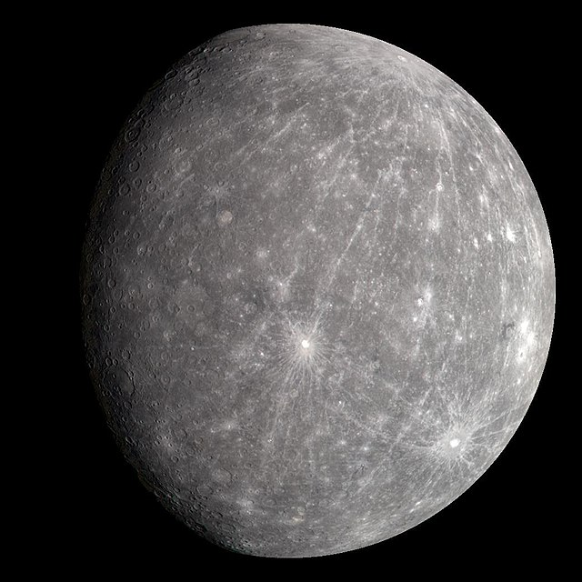

Описание
Меркурий — это самая близкая к Солнцу планета нашей системы. Удивительный факт: несмотря на близость к Солнцу, на Меркурии могут быть экстремально холодные ночи, так как у него почти нет атмосферы для сохранения тепла.
Характеристики Меркурия
| Характеристика | Значение |
|---|---|
| Диаметр | 4,880 км |
| Расстояние от Солнца | 57.91 млн км |
| Температура | -173°C до 427°C |